当店のお品書きにある「黒太」は、黒くて太い田舎そばのことでございます。
色は黒く、麺は太く、噛むほどにそばの香りが立ちます。
冷たいおそばは、もりでも、天もりでも、大海老天もりでも――どれでも、お申し付けくだされば田舎そば（黒太）に替えてお出しします。
当店のお品書きにある「黒太」は、黒くて太い田舎そばのことでございます。
色は黒く、麺は太く、噛むほどにそばの香りが立ちます。
冷たいおそばは、もりでも、天もりでも、大海老天もりでも――どれでも、お申し付けくだされば田舎そば（黒太）に替えてお出しします。
「田舎そばは定番のルックス。黒くて太い、如何にも蕎麦といった風貌で惚れる」 お客様の声より
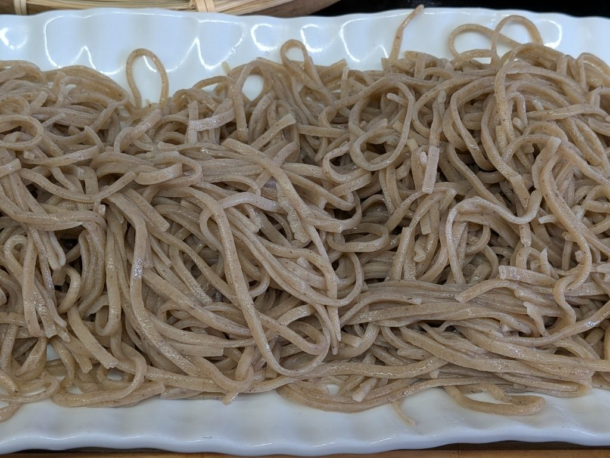
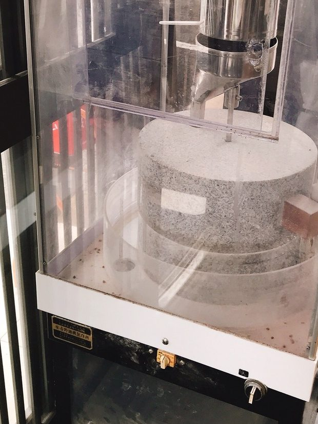
そば打ちは、三十年を超えました。
そば粉は、茨城産と信州産を合わせて打っております。
入口のガラスケースには、石臼の製粉機を据えております。ご来店の折に、どうぞご覧くださいませ。
出汁を引く店の、中華そばでございます。
醤油ラーメン、ゆず塩ラーメン、担々麺、煮干しラーメン。おそばと同じ厨房から、一杯ずつお出ししております。
「蕎麦屋さんのラーメンです」「ほろほろやわらかいチャーシューがかなり良いです」 お客様の声より
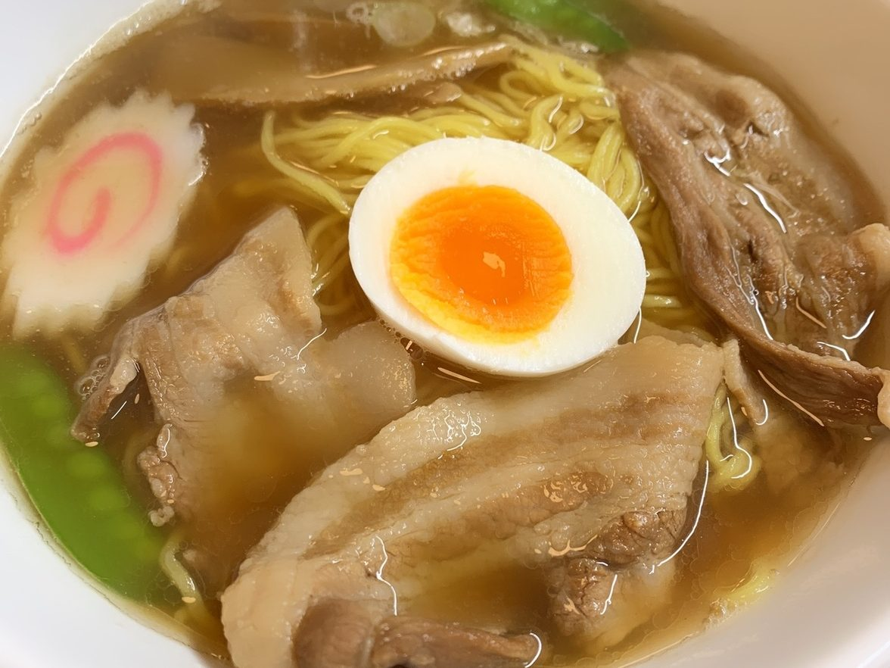
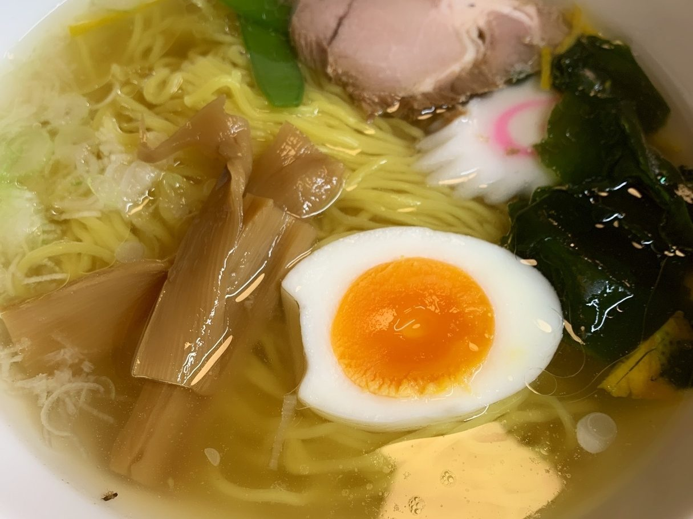
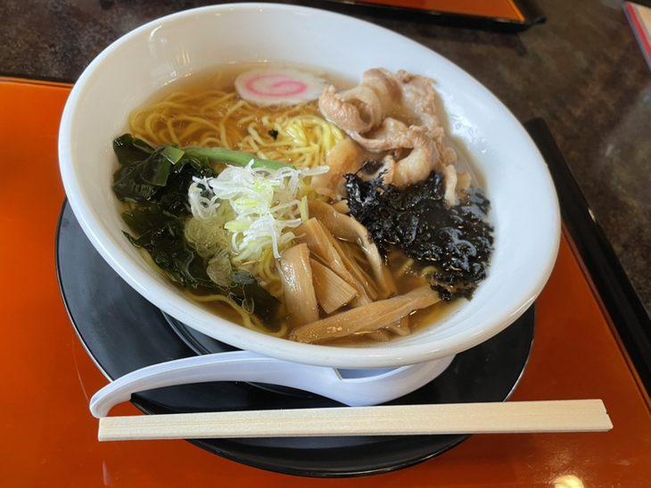
海老、舞茸、かき揚げ。おそばのお供にも、お酒の肴にもどうぞ。
天丼やうな重に、おそば・うどんを添えたセットもご用意しております。
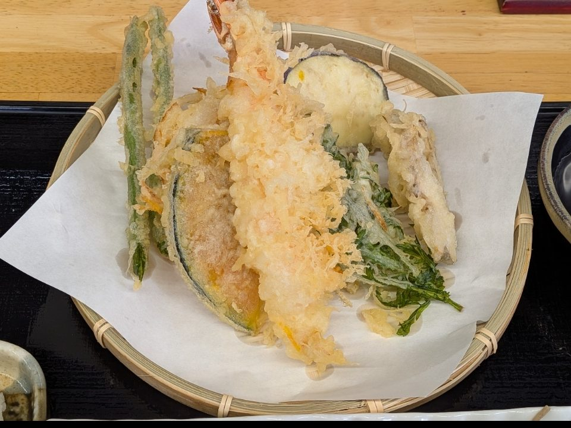
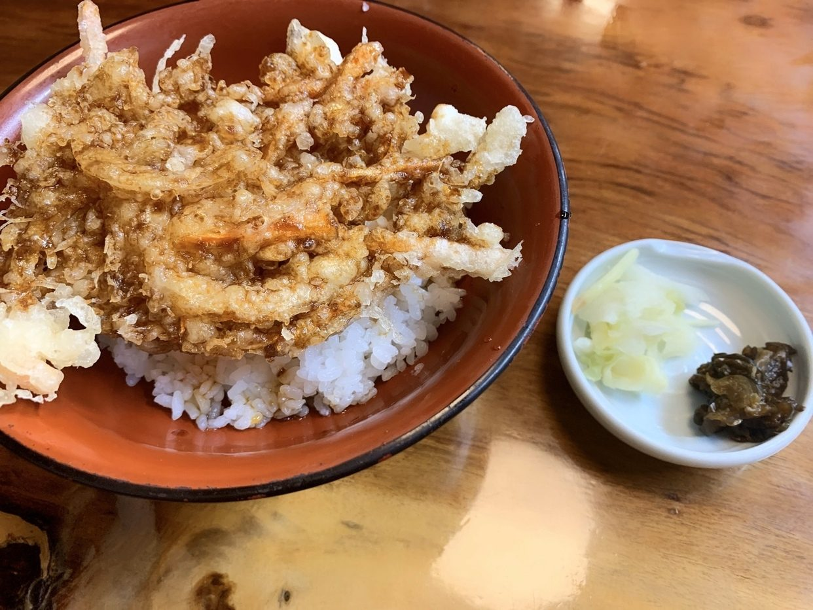
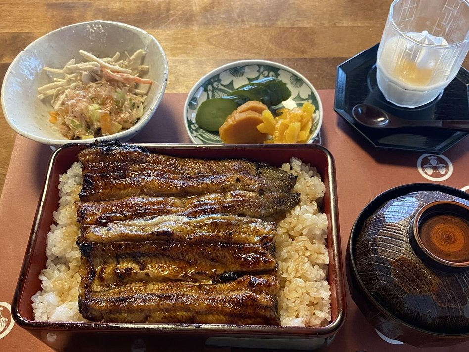
テーブルの一つは、無垢の一枚板でございます。
窓の外は畑で、昼はよく光が入ります。
小上がりのお座敷もございます。
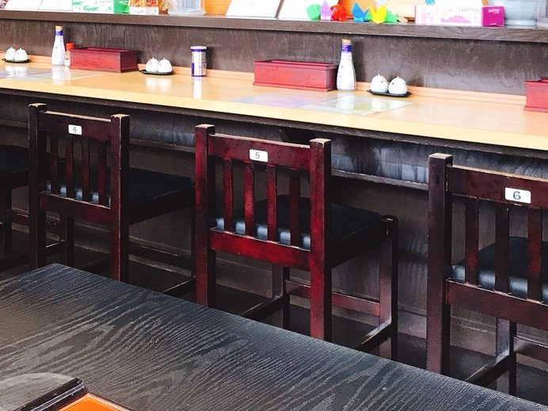
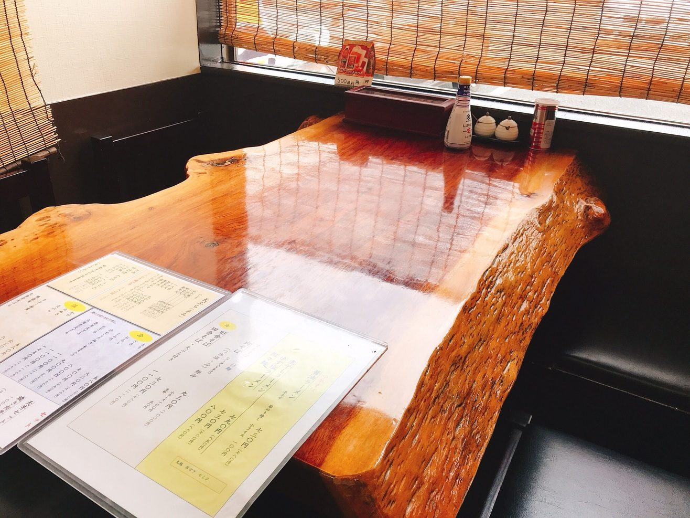
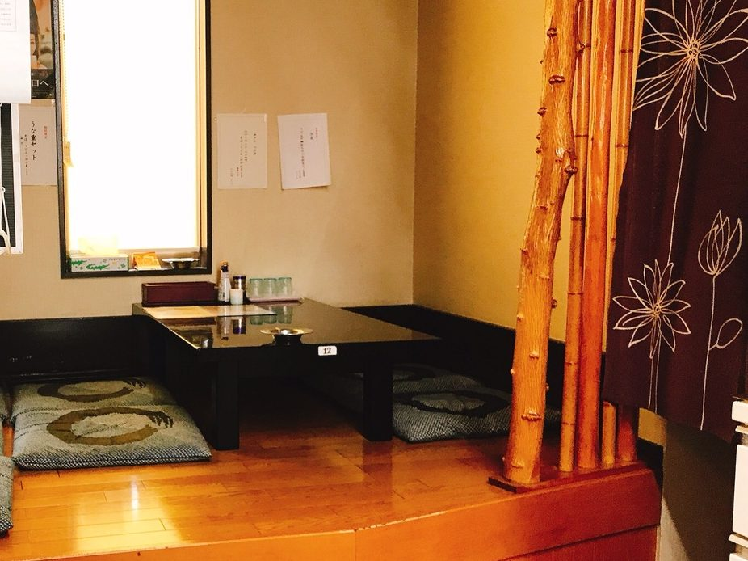
ご来店の前に、ご確認くださいませ。
| 住所 | 〒306-0126 茨城県古河市諸川1365-1 |
|---|---|
| 電話 | 0280-23-3707 |
| 営業時間 | 昼 11:15〜14:00／夜 17:30〜20:30 |
| 定休日 | 月曜日 |
| 駐車場 | 有 |
| お席 | カウンター席・テーブル席・小上がりのお座敷 |
お席のご予約やご相談は、お電話にて承ります。
空の高い日も、雲の低い日も、変わらぬそばを打ってお待ちしております。